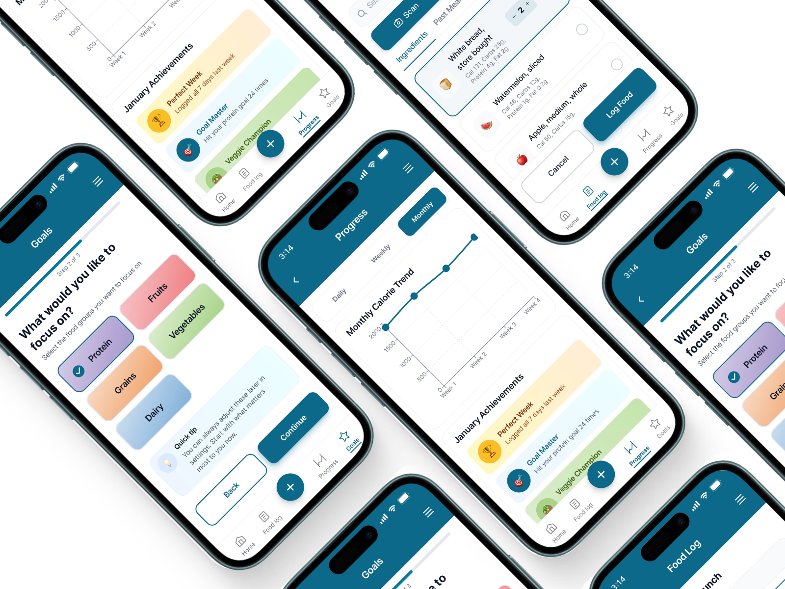

Dhwani Parekh.
Product designer crafting considered digital products.
I blend UX research, systems thinking, and AI-enhanced design to create thoughtful digital products that feel quiet, useful, and a little surprising.
- Product Design
- AI Products
- 0‑to‑1
- Healthcare
- E‑commerce
- EdTech
A few things I've shipped recently.
Three case studies: a nutrition app redesign, an AI tool for parent–teacher alignment, and a skincare ecosystem's information architecture. Each one taught me something about how people decide.

MyPlate: redesigning healthy eating habits.
Logging a meal felt like homework, so people quit. A friction-first redesign that makes tracking take seconds and habits actually stick.
from 74.5
tasks (from 60%)
redesigned screen
Tandem: keeping parents and teachers in sync.
Parents and teachers meet ~40 minutes a year. Tandem is an AI copilot that turns classroom observations into messages parents understand, without ever diagnosing.
per family, a year
juggles at once
touchpoints

CeraVe: clearer paths through a large skincare ecosystem.
Users couldn't find the very tool built to help them. I rebuilt CeraVe's structure so the right guidance surfaces first.
information
≥70% success
identified
A bit more about me.
Former fine artist, current product designer. Still chasing the same thing: making the complicated feel obvious.
Hi, I'm Dhwani.
After more than a decade of storytelling through painting, I found a new outlet in digital design, using research, strategy, and visual storytelling to turn messy problems into intuitive, human-centered experiences.
I love diving into user behavior, untangling messy flows, and designing interfaces that just make sense. Whether it's improving an e-commerce experience or redesigning an app, I aim to create products that balance user needs with business goals.
I'm especially interested in Product design, UX strategy, and Data-informed design that drives meaningful outcomes.